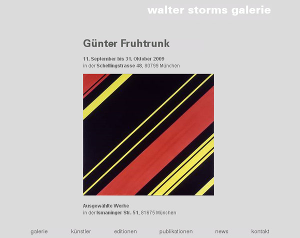
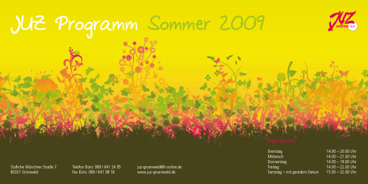
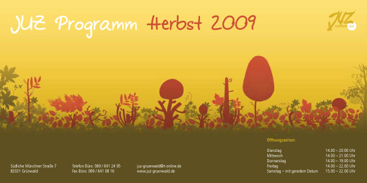
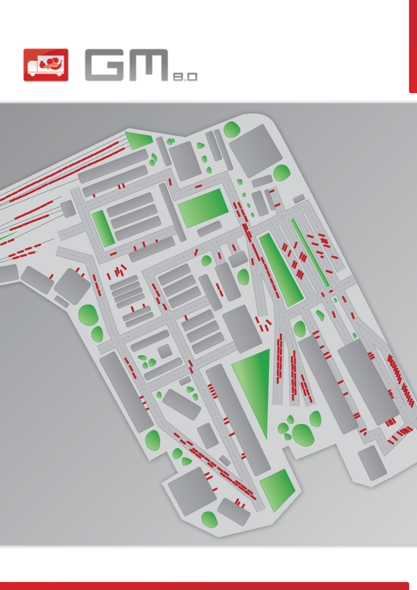
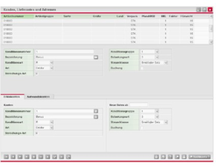
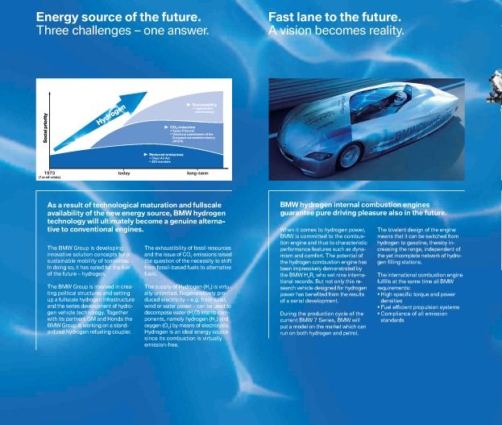

Websites, applications and interfaces from before the AI work. Design at scale for IU’s pre-enrolment websites, and print and software for Zetcom, Canto, Giesecke & Devrient, Großmarkthalle and BMW.
IU International University · 2019 – 2024Pre-enrolment websites: information architecture rebuilt, UI redesigned, design system governance and continuous A/B testing across the study-programme pages.IU International University · 2019 – 2024Hero and search flow for the programme finder, every state drawn before build.IU International University · 2019 – 2024Wireframes for the enrolment funnel: the same content, one decision per screen.IU International University · 2019 – 2024Programme and landing pages on desktop and mobile after the redesign.Canto · freelance · 2009 – 2014Cumulus mobile client: key visual and interface illustration.Zetcom AG · freelance · 2010Museum collection management system: UI design for a dense, expert-facing application.

Walter Storms Galerie · freelance · 2009Exhibition website for a contemporary art gallery in Munich.

JUZ Grünwald · freelance · 2009Seasonal programme flyer for a youth centre, summer edition.

JUZ Grünwald · freelance · 2009Seasonal programme flyer for a youth centre, autumn edition.

Jenomics for Großmarkthalle München · 2008GM 8.0 prospectus: cover and illustrated site map for a wholesale-market software product.

Jenomics for Großmarkthalle München · 2008Display Commander: the customer and delivery data screens behind the GM 8.0 brochure.Jenomics for Giesecke & Devrient · 2007 – 2008Card-design applet: a self-service flow to design your own payment card, from picture to print.

Sanafir for BMW Group · 2007Editorial spread on hydrogen combustion technology, from a longer brochure.